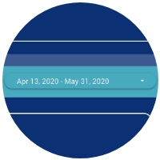
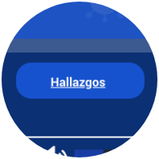

<main>
    <section class="l-dashboard bg-azul">
        <div class="container">
            <h2 class="text-center mb-5">¿Cómo usar el dashboard?</h2>
            <div class="row justify-content-center">
                <div class="col-12 col-lg-10">
                    <div class="d-flex flex-wrap flex-row justify-content-center">
                        <!-- item1 -->
                        <div class="c-box-dashb">
                            <div class="imagen">
                                
                            </div>
                            <p>1. Usa los diferentes selectores y filtros para ver diferentes resultados y análisis.</p>
                        </div>
                        <!-- item2 -->
                        <div class="c-box-dashb">
                            <div class="imagen">
                                
                            </div>
                            <p>1. Usa los diferentes selectores y filtros para ver diferentes resultados y análisis.</p>
                        </div>
                        <!-- item3 -->
                        <div class="c-box-dashb">
                            <div class="imagen">
                                
                            </div>
                            <p>1. Usa los diferentes selectores y filtros para ver diferentes resultados y análisis.</p>
                        </div>
                    </div>                    
                </div>
            </div> 
            <h5 class="text-center mt-4">Ya estas listo para ingresar y visualizar<br>toda la información presentada.</h5>
            <div class="btn-base btn-naranja mt-5">
                <a href="">
                    <span class="h5">Ir al Home</span>
                </a>
            </div>      
        </div>
    </section>
</main>